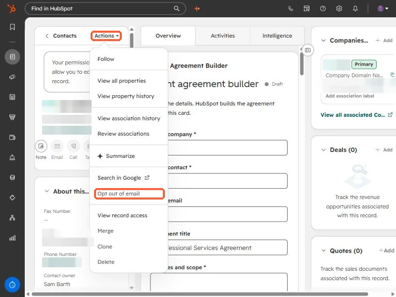
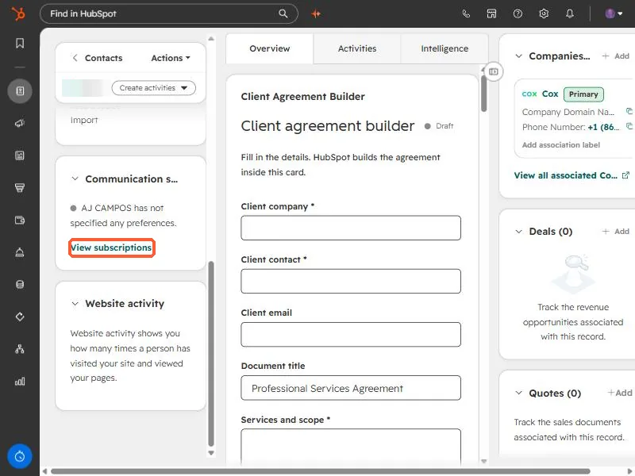
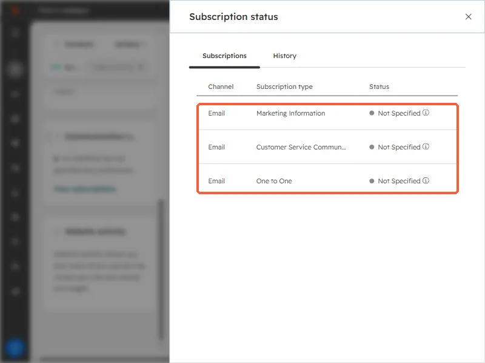

Short answer
Open the contact, click Actions, choose Opt out of email, and confirm. HubSpot then stops future marketing email and one-to-one email to that address. You need marketing access permissions. This is a UI action: the opted-out property is read-only through the API, so a script cannot set it for you.
1. Opt the contact out
In Contacts, open the person's record. In the upper right of the left sidebar, click Actions and choose Opt out of email. Confirm with Yes, opt them out. The contact's details are blurred in this screenshot.


You need marketing access permissions to do this. Without it the option will not work for you.
2. Check the status on the record
Scroll the left sidebar to the Communication subscriptions card. It summarizes the contact's preferences and links to View subscriptions.


View subscriptions opens a panel listing the subscription types, for example Marketing Information, Customer Service Communications, and One to One, each with a status. In this demo contact all three read Not Specified because I did not opt anyone out.


3. What opt out does not stop
- HubSpot says opting out blocks future marketing and one-to-one email, but transactional email can still be delivered.
- It does not stop other channels, such as a sales rep phoning them.
- It does not remove the contact. Their record and history stay.
4. Why a script cannot do it
I tried this through the API for a client contact. The opted-out property is read only there, so the write fails. Setting the contact to non-marketing also failed because the private app lacked the marketable-contacts scope. Both are done in the UI, so I handed over the manual steps instead of forcing it.